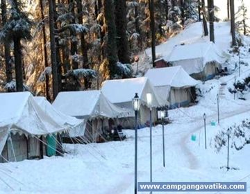
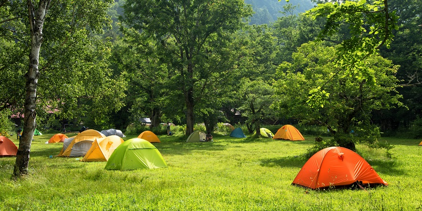
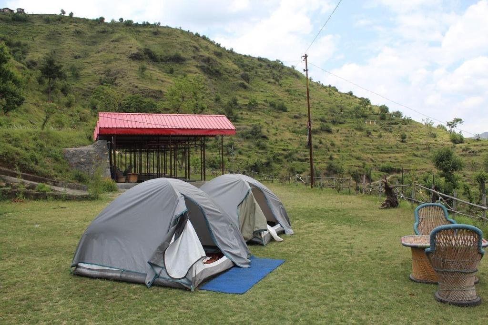

Top 10 Camping Sites in Mussoorie

Site 1: Kempty Falls Camp
Location: Kempty Falls
Rent: ₹2000/night
A picturesque camping site near the famous Kempty Falls.

Site 2: Camel Back Road Camp
Location: Camel Back Road
Rent: ₹1800/night
Enjoy stunning sunset views while camping on Camel Back Road.

Site 3: Mussoorie Lake Camp
Location: Mussoorie Lake
Rent: ₹2200/night
Camp by the beautiful Mussoorie Lake, perfect for boating.

Site 4: Lal Tibba Camp
Location: Lal Tibba
Rent: ₹2500/night
The highest point in Mussoorie offers breathtaking views.